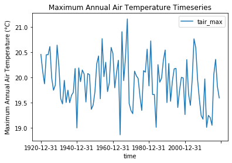
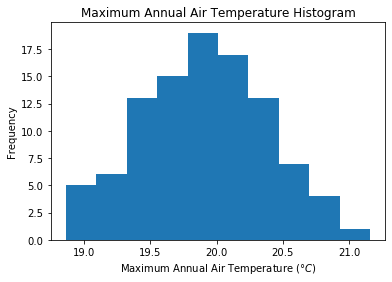
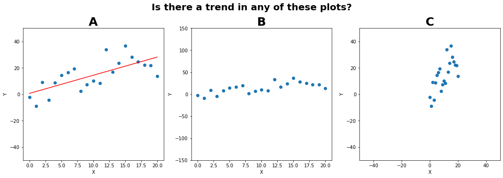

Lab 2-2#
Graphical Data Analysis
When you get a set of measurements, ask yourself:
What do you want to learn from this data?
Plot your data! (and always label your plots clearly)
Reporting of Numbers#
Keep track of units, and always report units with your numbers!
Make sure to check metadata about how the measurements were made
Significant figures
Think about measuring snow depth with a meter stick:
Should I report a snow depth value of 20.3521 cm?
Should I report a snow depth value of 2035 mm?
Should I report a snow depth value of 20.0000 cm?
Consider the certainty with which you know a value. Don’t include any more precision beyond that
Note: Rounding errors - Allow the computer to include full precision for intermediate calculations, round to significant figures for the final result of the computation that you report in the answer
To start, we will import some python packages:
# numpy has a lot of math and statistics functions we'll need to use
import numpy as np
# pandas gives us a way to work with and plot tabular datasets easily (called "dataframes")
import pandas as pd
# we'll use matplotlib for plotting here (it works behind the scenes in pandas)
import matplotlib.pyplot as plt
# tell jupyter to make out plots "inline" in the notbeook
%matplotlib inline
### Why are you plotting?
**You have an application in mind with your data.** This application should inform your choice of analysis technique, what you want to plot and visualize.
Cell In[2], line 3
**You have an application in mind with your data.** This application should inform your choice of analysis technique, what you want to plot and visualize.
^
SyntaxError: invalid syntax
Open our file using the pandas read_csv function.
# Use pandas.read_csv() function to open this file.
# This stores the data in a "Data Frame"
my_data = pd.read_csv('my_data.csv')
# look at the first few rows of data with the .head() method
my_data.head()
| time | tair_max | tair_min | cumulative_precip | |
|---|---|---|---|---|
| 0 | 1920-12-31 | 20.455167 | -9.901765 | 102.502512 |
| 1 | 1921-12-31 | 20.119887 | -10.364254 | 97.108113 |
| 2 | 1922-12-31 | 19.872675 | -10.313181 | 97.166797 |
| 3 | 1923-12-31 | 20.449070 | -11.359639 | 97.902843 |
| 4 | 1924-12-31 | 20.449110 | -10.046539 | 99.329978 |
Scatterplots#
If we’re looking for relationships btween variables within our data, try making scatterplots.
Later this quarter we’ll get into statistical tests for correllation where we’ll use scatterplots to visualize our data.
Remember that correlation =/= causation!
my_data.plot.scatter(x='tair_max', y='tair_min')
plt.title('Maximum vs Minimum\nAir Temperature');

Timeseries plots#
If we are interested in how some random variable changes over time.
Similarly, if we have a spatial dimension and are interested in how a variable change along some length we could make a spatial plot.
my_data.plot(x='time', y='tair_max')
plt.ylabel('Maximum Annual Air Temperature ($\degree C$)')
plt.title('Maximum Annual Air Temperature Timeseries');

### Histogram plots
- We are probably interested in what kind of distribution our data has.
- Make a histogram plot to quickly inspect (Note: Careful with the choice of [number or width of bins](https://en.wikipedia.org/wiki/Histogram#Number_of_bins_and_width))
- See documentation for making [histograms with pandas](https://pandas.pydata.org/pandas-docs/stable/reference/api/pandas.Series.plot.hist.html#pandas.Series.plot.hist), and [histograms with matplotlib](https://matplotlib.org/3.1.3/gallery/statistics/hist.html)
my_data['tair_max'].plot.hist(bins=10)
plt.xlabel('Maximum Annual Air Temperature ($\degree C$)')
plt.title('Maximum Annual Air Temperature Histogram');

Boxplots#
A boxplot (sometimes called “box-and-whisker” plots) can also help visualize a distribution, especially when we want to compare multiple data sets side by side.
The box usually represents the interquartile range (IQR) (between the 25th and 75th percentiles)
Symbols (lines, circles, etc) within the box can represent the sample mean and/or median
Vertical line “whiskers” can represent the full range (minimum to maximum) or another percentile range (such as 2nd and 98th percentiles)
Data points beyond the “whiskers” are “outliers”
What each symbol represents can vary, so be sure to check documentation to be sure! See documentation for making boxplots with pandas, and boxplots with matplotlib.
my_data.boxplot(column=['tair_min','tair_max'], grid=False)
plt.ylabel('Air Temperature ($\degree C$)')
plt.title('Min/Max Annual Air Temperature Boxplots');

Let’s look at a different set of data:#
from scipy.stats import linregress
# Plot the same set of points three different ways to show how plots can be manipulated to trick us!
fig, [plotA, plotB, plotC] = plt.subplots(ncols=3, nrows=1, figsize=(15,5), tight_layout=True)
# The underlying data is a linear relationship, but with a lot of random noise added
# There is a trend in the data, but it is hard to detect
x = np.linspace(0,20,21)
y = x + 15*np.random.randn(21)
# Be careful! Depending only on the axes limits we choose, we can make the data look very different
plotA.scatter(x,y)
# Adding a regression line can sometimes be misleading (suggesting there's a trend even if there isn't)
m, b, _, _, _ = linregress(x, y)
# Just because I've plotted a linear regression here, doesn't mean that it's statistically significant!
plotA.plot(x, m*x + b, color='red')
plotA.set_xlim((-1,21)); plotA.set_ylim((-50,50))
plotA.set_xlabel('X'); plotA.set_ylabel('Y')
plotA.set_title('A', fontsize=25, fontweight='bold')
# We can make the data look a lot different by just changing the axes limites
# This can be misleading, be careful!
plotB.scatter(x,y)
plotB.set_xlim((-1,21)); plotB.set_ylim((-150,150))
plotB.set_xlabel('X'); plotB.set_ylabel('Y')
plotB.set_title('B', fontsize=25, fontweight='bold')
# We can make the data look a lot different by just changing the axes limites
# This can be misleading, be careful!
plotC.scatter(x,y)
plotC.set_xlim((-50,50)); plotC.set_ylim((-50,50))
plotC.set_xlabel('X'); plotC.set_ylabel('Y')
plotC.set_title('C', fontsize=25, fontweight='bold')
fig.suptitle('Is there a trend in any of these plots?', fontsize=20, fontweight='bold', y=1.05);

Ethics in graphical analysis#
Be careful!
Others could try and manipulate plots and statistics to convince us of something
We can end up tricking outselves with “wishful thinking” and “confirmation bias” if we are not careful
This is why we have statistical tests, they’re our attempt to find objective measures of “is this a true trend”
Don’t draw a trendline through data when there isn’t a statisticaly significant trend!